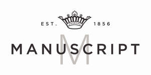

Trade Mark Journal No.2025/021 23 May 2025
UK00004188859 14 April 2025 (16)
Mark 1
Mark 2
Mark 3

- Class 16
- Binders [stationery]; Folders [stationery]; Office stationery; Stationery folders; Ink for fountain pens; Fountain pen ink cartridges; Ink cartridges for fountain pens; Pens; Colouring pens; Artists pens; Steel pens; Correction pens; Drawing pens; Film pens; Pen refills; Pen cartridges; Highlighter pens; Stylographic pens; Ink less pens; Pen sets; Pen clips; Pen nibs; Pen stands; Pen boxes; Fibertip pens; Marker pens; Highlighting pens; Coloured pens; Colour pens; Pen cases; Ball pens; Rollerball pens; Ballpoint pens; Marking pens; Felt pens; Ink pens; Brush pens; Pens [office requisites]; Pen ink refills; Marking pen refills; Boxes for pens; Cases for pens; Fiber-tip pens; Ballpoint pens; Pen ink cartridges; Ink for pens; Felt writing pens; Steel pens [styluses or stencil pens]; Pocket pen shields; India ink pens; Ballpoint pen refills; Gel roller pens; Ball point pens; Roller ball pens; Felt tip pens; Pen calligraphy copybooks; Stands for pens; Fibre-tip pens; Marking pens [stationery]; Pens for marking; Felt marking pens; Felt-tip pens; Pens of precious metal; Pen and pencil holders; Pen and pencil boxes; Stands for pens and pencils; Balls for ball-point pens; Stands for pen and pencil; Glue pens for stationery purposes; Notebooks; Pocket notebooks; Notebook dividers; Notebook paper; Notebook covers; Blank paper notebooks; Spiral-bound notebooks; Holders for notebooks; Desk pads; Calendar desk pads; Desk organisers; Desk mats; Desk calendars; Desk trays; Desk sets; Desk tidies; Desk diaries; Pads [stationery]; Drawing pads; Writing pads; Pads (Writing -); Propelling pencils; Pencil trays; Colouring pencils; Colour pencils; Charcoal pencils; Correction pencils; Coloured pencils; Pencil sharpeners; Mechanical pencils; Retractable pencils; Pencil sets; Pencil leads; Painting pencils; Correcting pencils; Sharpeners (Pencil -); Pencil tins; Pencil holders; Drawing pencils; Pencil erasers; Pencil cups; Propelling pencil refills; Pencil lead refills; Decorations for pencils; Pencil lead holders; Photo albums; Mini photo albums; Photo albums and collectors albums; Albums; Event albums; Stamp albums; Coin albums; Autograph albums; Photographic albums; Photo prints; Photograph albums; Collector albums; Events albums; albums; Sticker albums; Photo mounting corners; Photo storage boxes; Photograph album pages; Passport covers; Passport holders; Passport cases; Cases for passports; Diaries; Pocket diaries; Leather covered diaries; Diaries [printed matter]; Stationery; Stationery boxes; Printed stationery; Paper stationery; Stationery cases; Writing stationery; Covers [stationery]; Files[stationery]; Pocket books [stationery]; Paper folders [stationery]; Office paper stationery; Paper sheets [stationery]; Cases for stationery; Writing cases[stationery]; Document files [stationery]; Stationery and educational supplies; Notepads; Adhesive notepads; Block notepads; Art paper; Wrapping paper; Erasers; Chalk erasers; Blackboard erasers [chalk erasers]; Fountain pens; Pen trays; Pen rests; Etching pens; Pen holders; Pen wipers; Nibs; Nibs for writing instruments; Nibs of gold for writing instruments; Calligraphy ink; Calligraphy paper; Writing brush calligraphy copybooks; Writing brush for calligraphy; Writing brushes for calligraphy; Felt mats for calligraphy; Papers for painting and calligraphy; Writing brushes for ground calligraphy; Water-writing cloths for calligraphy practice; Felt mats for Chinese calligraphy (stationery).
Manuscript Pen Company Ltd